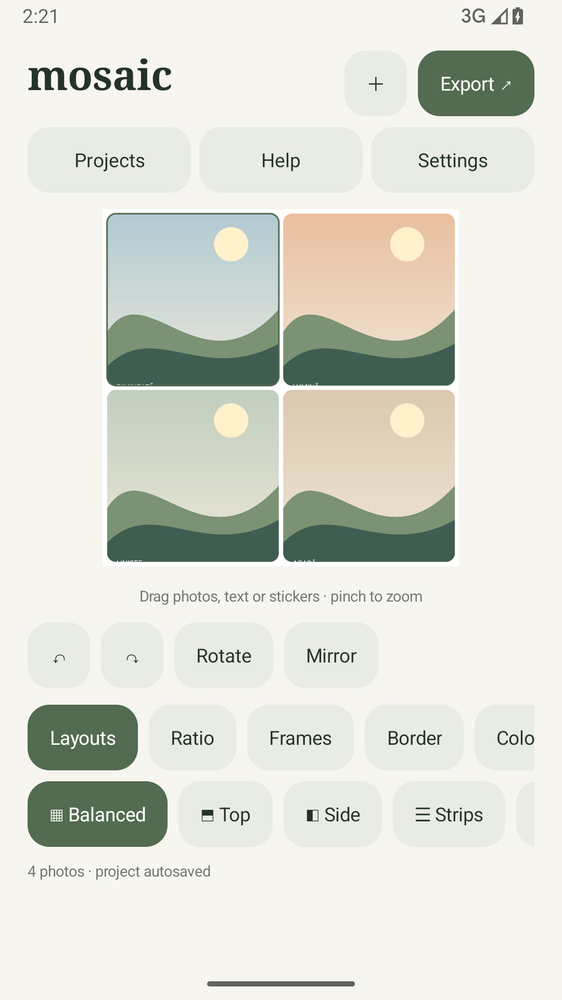
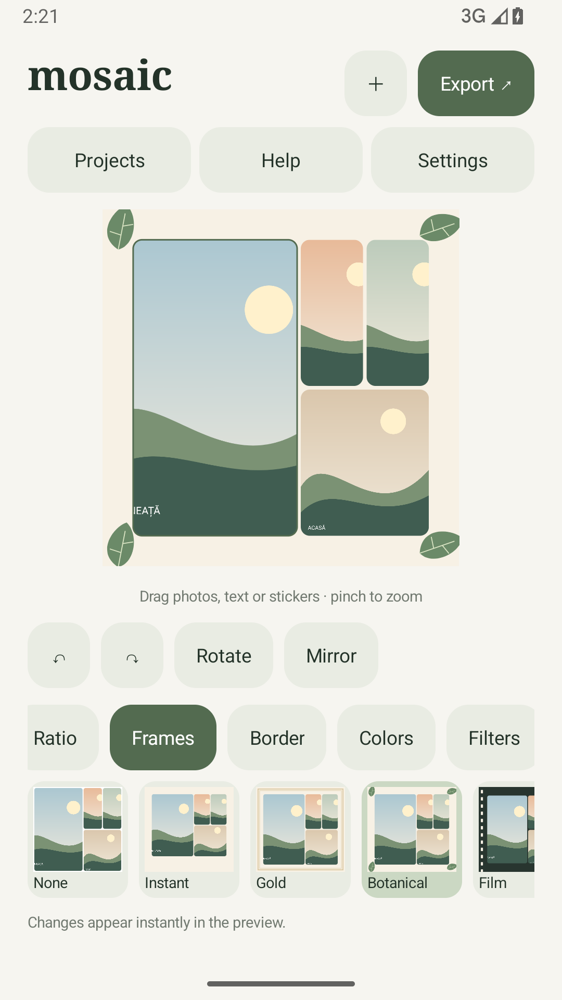
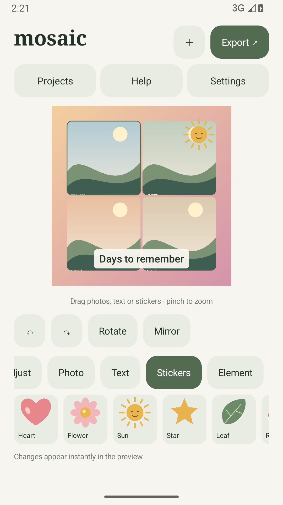

PRAXIS SCIENCE LAB / ANDROID
Mosaic
Create photo collages with frames, stickers and individual photo adjustments.
In testing Not yet available on Google Play.
Create collages with up to nine photos in Mosaic for Android 10 and later. Choose from eight layout families and adjust spacing, rounded corners and canvas proportions.
Adjust brightness, contrast and saturation for each photo. Reposition, zoom, rotate and mirror images. Add 11 decorative frames, 18 original vector stickers and editable text, with undo and redo.
Save named projects locally and return to your current draft. Export JPG or PNG without a watermark; JPG supports up to 3072 pixels on the longest edge. Share exports through Android.
The editor and export work offline. Newly imported originals stay privately on the device, while smaller previews keep editing responsive. English, Romanian and Spanish are available. No account is required.
Version 0.5.0 is in testing. Commercial ads are not configured. The development build includes an optional Google demo ad in Settings; the signed release does not expose that test button.
Inside the app
Actual screenshots from version 0.5.0 (5).



Language
English by default; Romanian and Spanish available in Settings. Help and privacy information are available in all three languages.
Using the app
Uninstalling removes private projects; gallery exports remain. New imports preserve the original encoded file, up to 100 MB per file. Editor previews are limited to 1200 pixels. Export decodes photos successively with a bounded memory budget; extreme zoom or older low-resolution imports may require interpolation. Memory pressure can release undo history while keeping the project.
Praxis Science Lab is the publishing brand used by Traian Anghel. For support or privacy questions, email traiananghel@gmail.com. Include the app name and version. Do not send passwords, medical records, private recordings or other sensitive information.